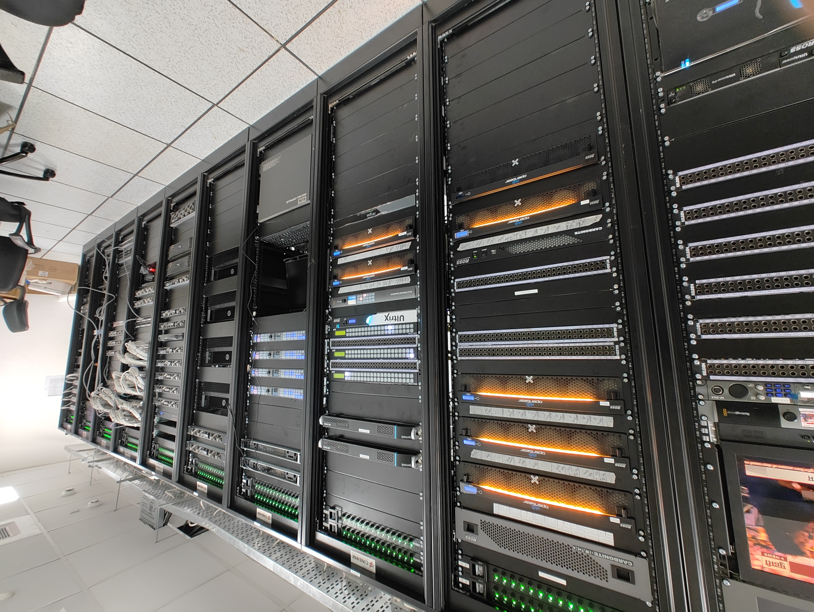
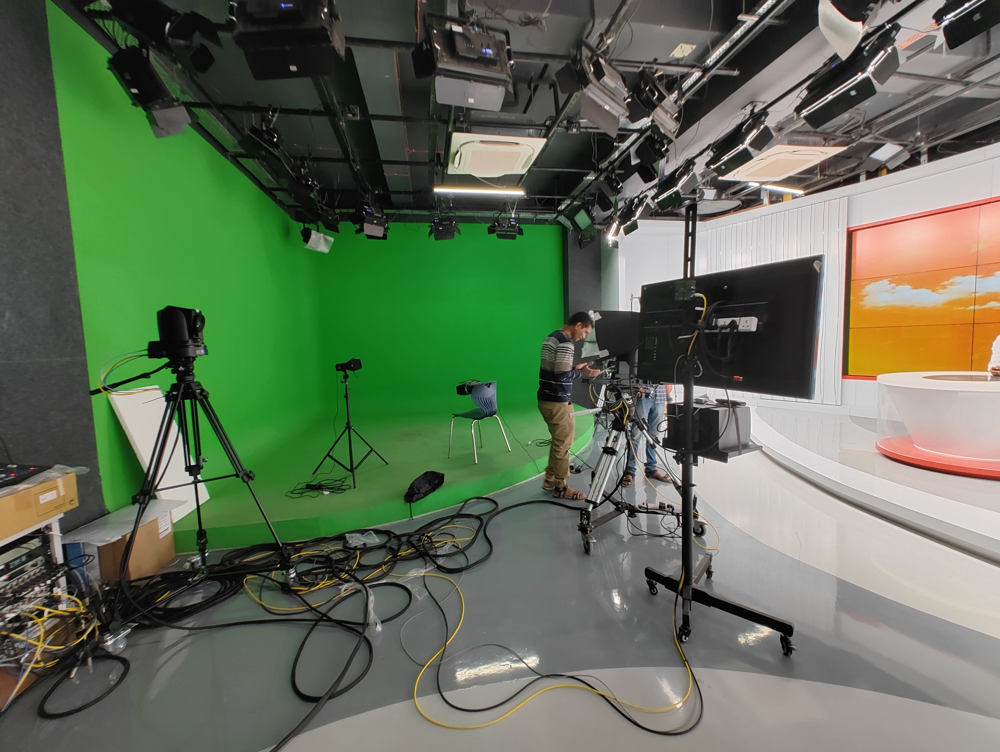
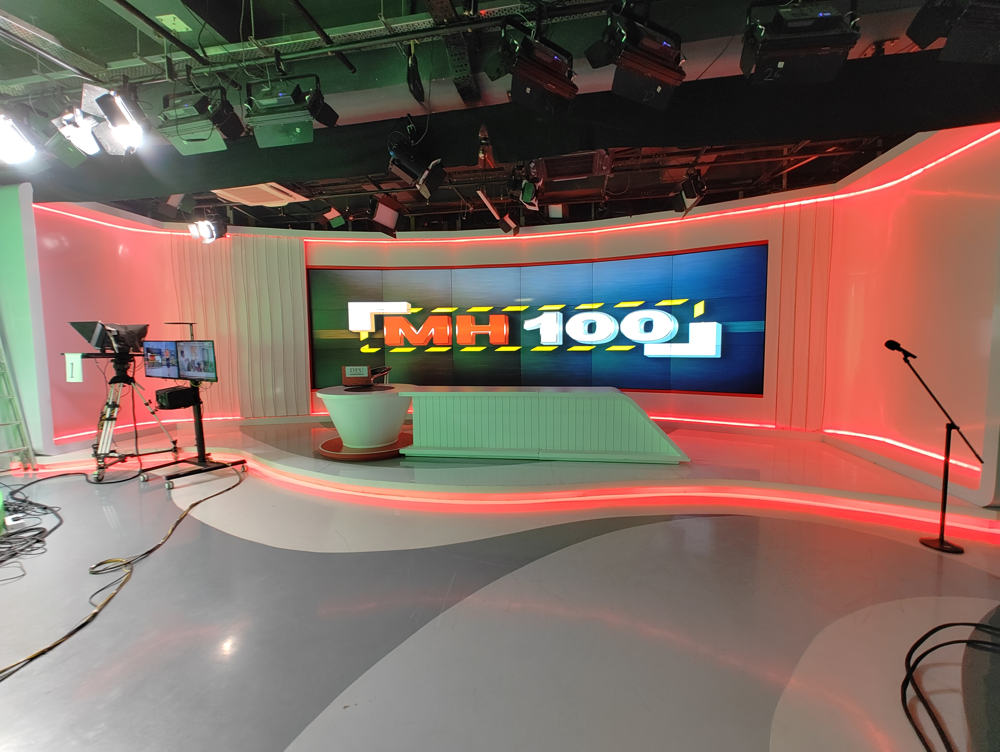
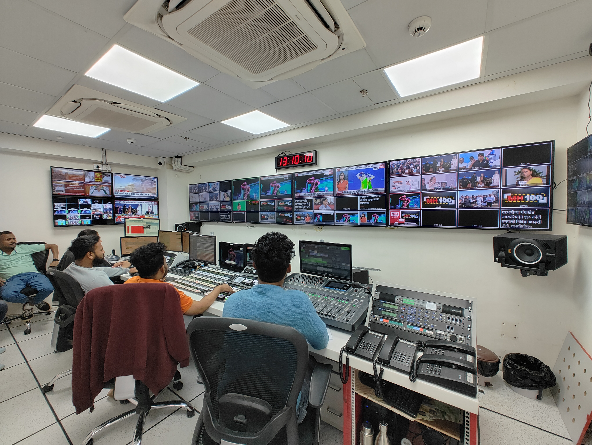
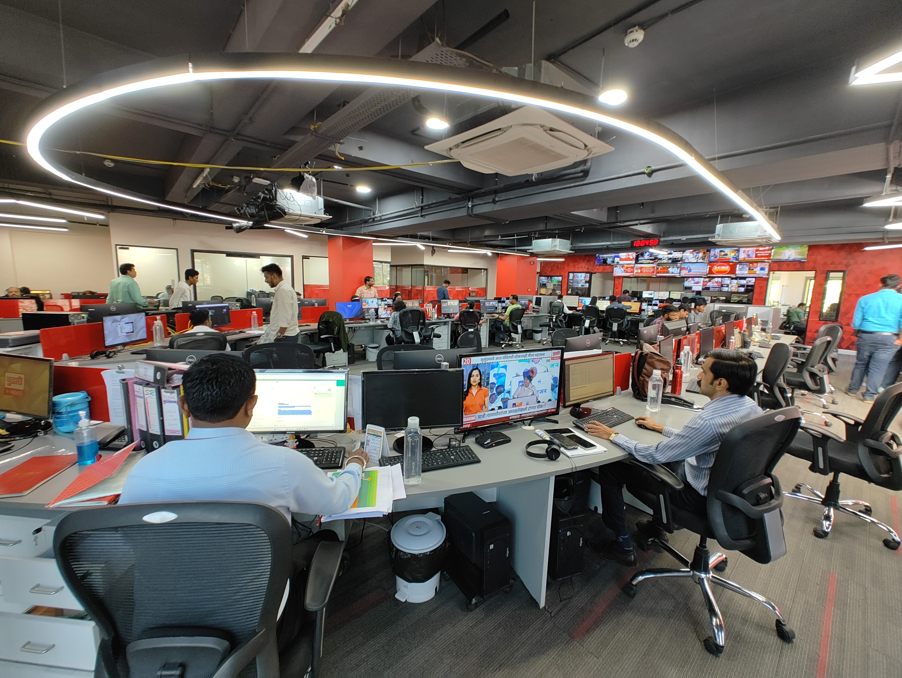
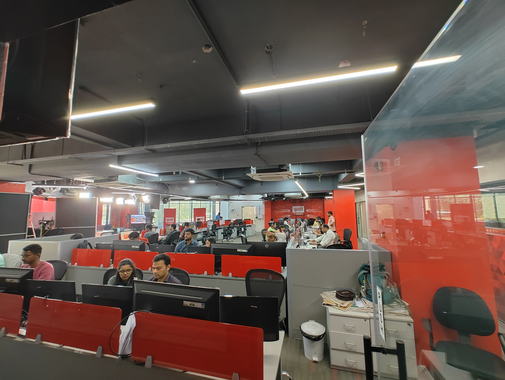
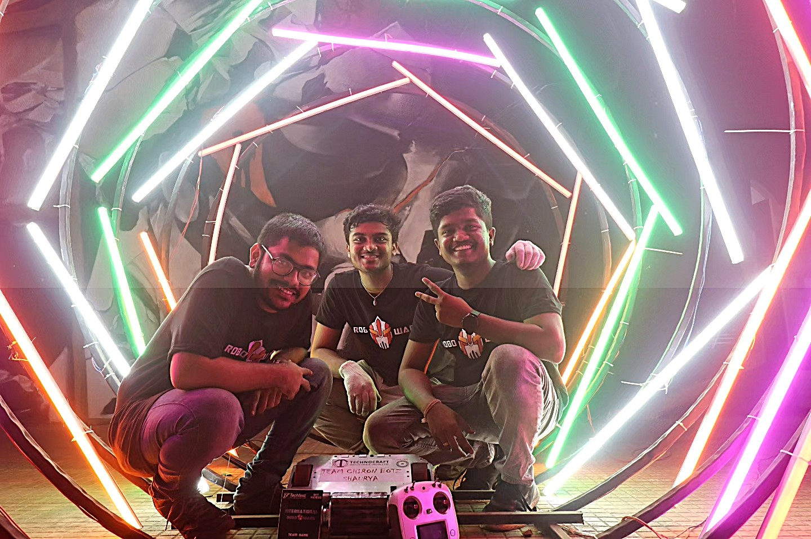
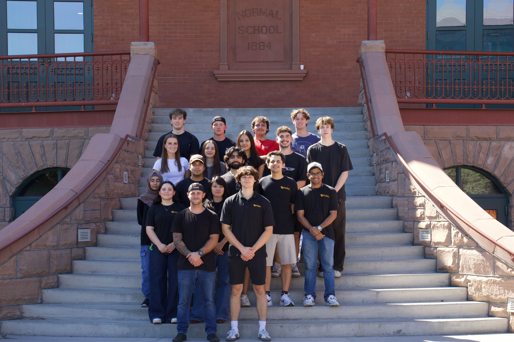
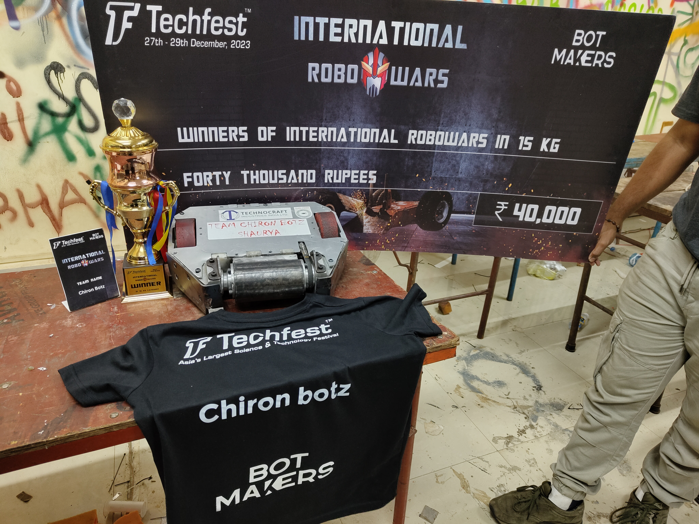
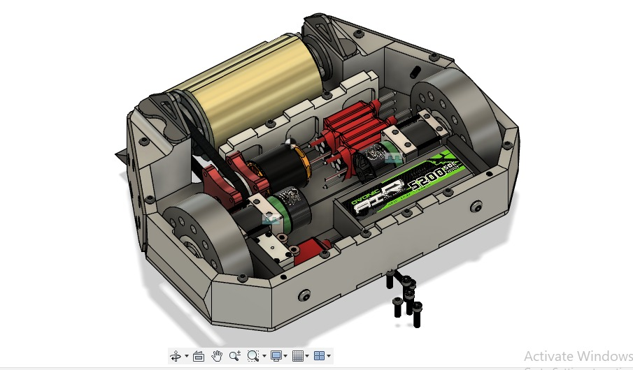

Let's Start With
My professional experience began in systems integration at Cineom and Pudhari Publications,
where I supported IT and engineering operations in fast-paced production environments.
Even while working in this role, my focus steadily shifted toward robotics, driven by a strong interest in automation,
control systems, and hands-on engineering beyond traditional IT workflows.
July 2022 - December 2022



During my internship at Cineom Broadcasting, I gained hands-on experience supporting broadcast systems integration by assisting with installation,
configuration, and testing of hardware and software components to ensure end-to-end functionality.
I learned structured troubleshooting for connectivity and performance issues while working closely with engineers.
I also helped with validation testing, maintained technical documentation, and supported deployment and maintenance activities,
strengthening my understanding of real-world production systems.



Provided IT and systems support for digital newsroom operations by configuring and maintaining workstations and tools,
troubleshooting hardware, software, and connectivity issues, and performing routine diagnostics to ensure system reliability.
Managed file handling, storage organization, and digital resources to keep publishing workflows smooth.
Coordinated with staff to resolve time-sensitive technical problems quickly and maintain uninterrupted daily news production and publishing.
Here are my key projects demonstrating hands-on engineering and problem-solving across robotics, embedded systems, and software development.
Developed a digital twin and manipulated a 6-DOF robotic arm to autonomously solve a 6×6 grid maze using OpenCV-based vision
and Dijkstra's algorithm. Executed joint-space and task-space motion using forward and inverse kinematics.
Tools: MATLAB, Python, OpenCV, FK/IK
Read Full Project →
Built and deployed a real-time Simulink model on Arduino. Implemented threshold-based control logic using reflective
line sensors for path detection. Controlled motor speed via PWM for differential drive motion.
Tools: Simulink, Arduino, PWM, IR Sensors
Read Full Project →
Complete autonomous navigation system for ROSMASTER X3 with digital twin simulation in AWS warehouse environment.
Features AMCL localization, custom A* path planning, DWA obstacle avoidance, and ArUco marker detection achieving 95%+ success rate.
Tools: ROS, Gazebo, AMCL, move_base, A* Planner, DWA, AWS RoboMaker
🌐 Website: Project Documentation
Read Full Project →
Wearable haptic device for Parkinson's tremor reduction using VCR vibrotactile cueing. Bilateral 8-motor system
with synchronized ESP-NOW communication (<20ms latency), Web Bluetooth control app, and custom 3D-printed enclosures.
Implements 24-permutation randomized patterns to prevent neural habituation.
Tools: ESP32, DRV2605L, LRA Motors, BLE, ESP-NOW, Web Bluetooth API, Arduino, 3D Printing
Read Full Project →
Implemented ROS perception pipeline on ROSMASTER X3 using OpenCV's Shi-Tomasi algorithm for real-time
corner detection. Analyzed parameter sensitivity across different feature densities for computer vision applications.
Tools: ROS, OpenCV, opencv_apps, cv_bridge, Astra Camera
Read Full Project →
Designed a folding, bio-inspired flying mechanism based on bat and insect gait principles. Integrated electronic
actuation to drive wing motion and modified gait patterns dynamically based on sensor feedback.
Tools: Mechanical Design, Embedded Systems, Sensor Integration
Read Full Project →
Designed a TensorFlow Keras CNN achieving 94.7% accuracy on the MURA dataset for fracture detection.
Applied CLAHE preprocessing and data augmentation for robust classification with ~0.18s inference on CPU.
Tools: Python, TensorFlow Keras, OpenCV, NumPy
Read Full Project →
Led a three-member team to design and build a portable waveform generation system. Developed an SMD-based embedded
circuit using ATmega328 and generated multiple waveform outputs using op-amp signal conditioning.
Tools: ATmega328, SMD PCB Design, Op-Amps, Embedded C
Read Full Project →
Developed a Java-based application to manage quarantine and healthcare availability data. Organized patient and
doctor records using OOP principles with location-based matching for efficient healthcare coordination.
Tools: Java, OOP, Data Structures
Read Full Project →




I'm Yogesh Salvi — a robotics engineer who enjoys building machines that actually move, survive impact, and perform under pressure.
While my professional background includes system support and engineering operations, what truly defines me is hands-on engineering:
mechanical design, embedded systems, motor control, and making hardware reliable when things get messy.
One of the most exciting areas I work in is Combat Robotics. It's engineering at its most real — designs must handle shock,
vibration, heat, and failure. This has trained me to iterate fast, test aggressively, reinforce weak points, and improve performance every
build cycle. It strengthened my approach to drivetrain design, power delivery, ESC control, mechanical durability, and rapid debugging.
I'm also involved with Sun Devil Motorsports, where engineering decisions directly impact performance.
That environment taught me disciplined teamwork and real-world execution — limited time, tight tolerances, and high expectations.
I enjoy it because results matter more than theory.
Overall, I'm someone who enjoys building practical systems where hardware and software come together cleanly.
I'm always working toward stronger performance, higher reliability, and smarter implementation through testing and iteration.